Developmentally attuned micro-pods for Toddler, Primary, and Elementary children, grounded in authentic AMI/AMS Montessori practice.
Each learning pod maintains an intimate 1:5 ratio with certified lead guides and natural wooden materials.
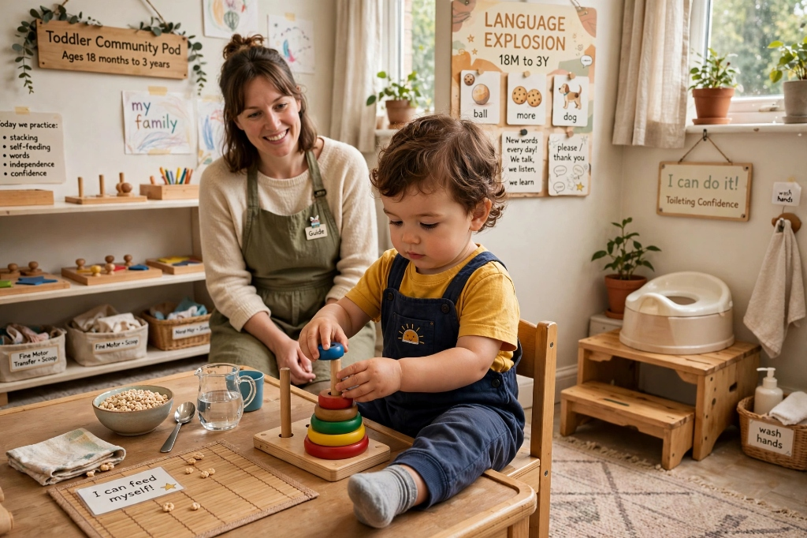
Language explosion, self-feeding, toileting confidence, and fine-motor coordination with loving support.
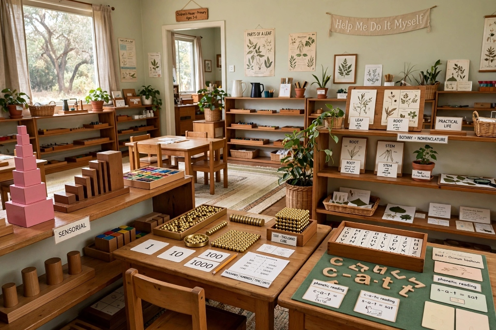
Sensorial materials, golden beads decimal mathematics, phonetic reading, and botany nomenclature.
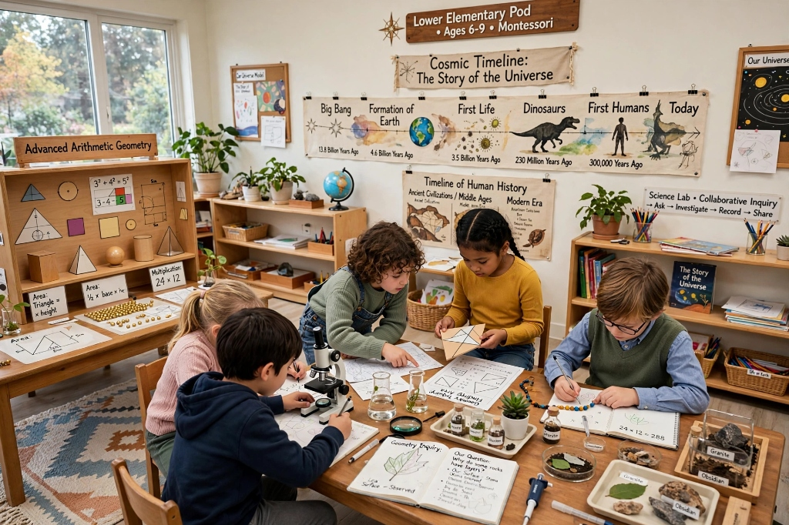
Cosmic Education, historical timelines, advanced arithmetic, geometry, science labs, and collaborative inquiry.
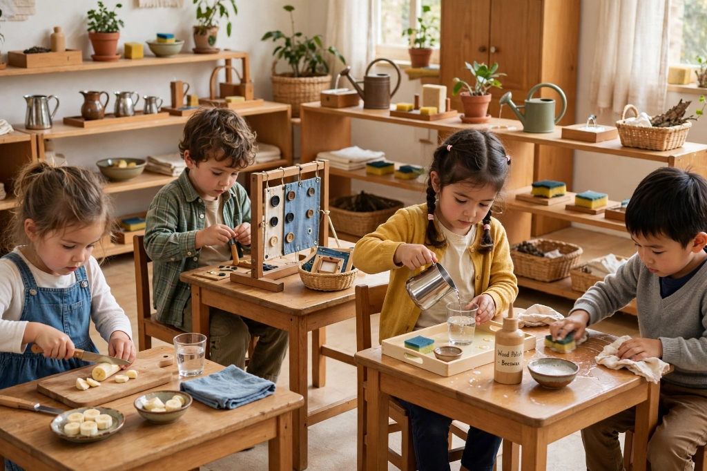
Food preparation, buttoning frames, pouring liquids, table scrubbing, polishing wood, and daily caring habits.
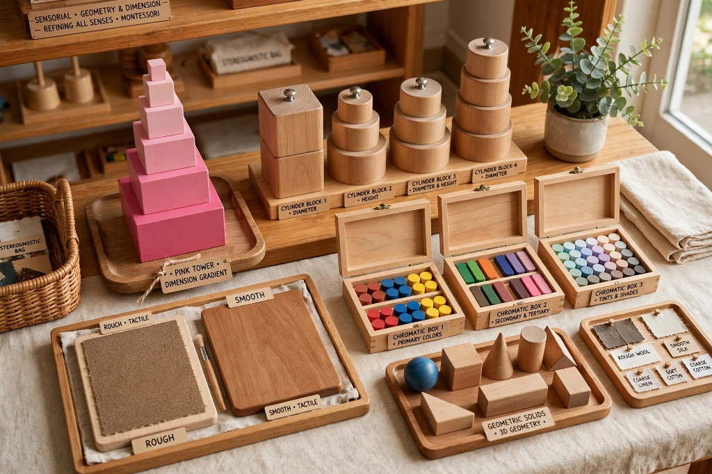
Refining all senses through pink tower gradients, cylinder blocks, rough/smooth boards, and chromatic color boxes.
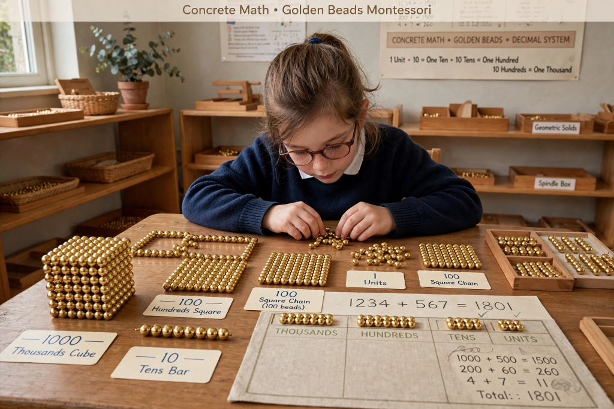
Progressing from tangible bead units, tens, hundreds and thousands into decimal system operations and square chains.
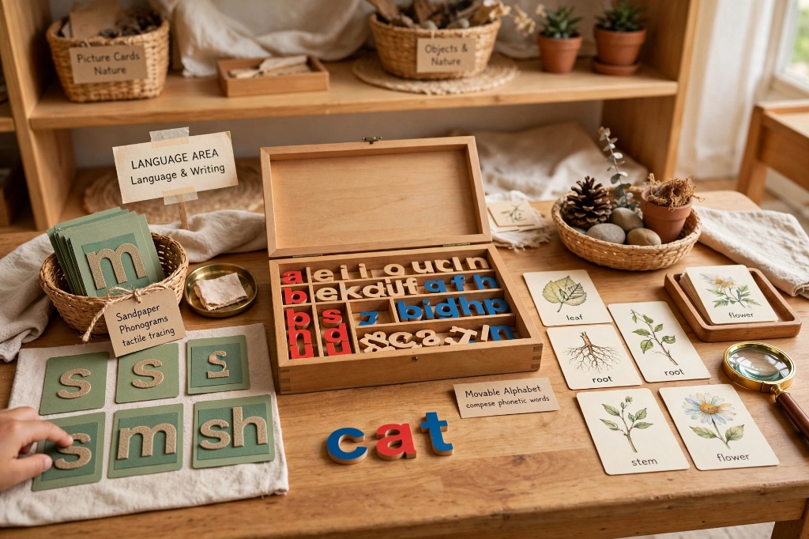
Tracing tactile sandpaper phonograms, composing phonetic words, and reading rich natural nomenclature cards.
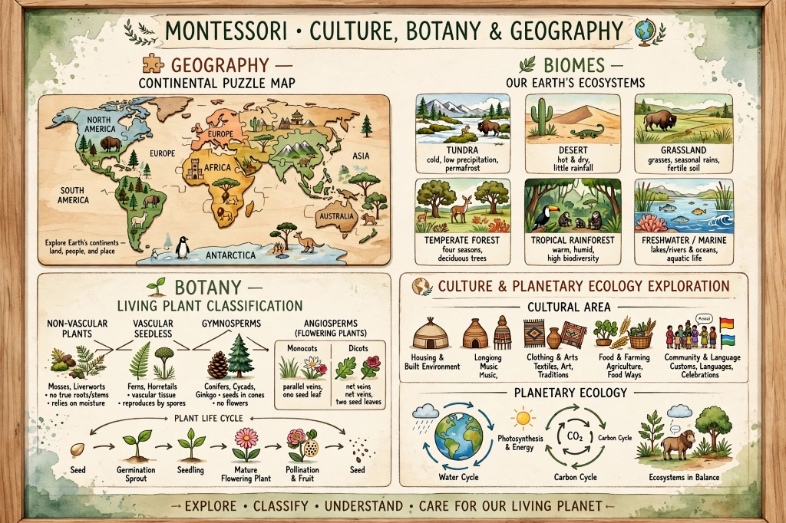
Continental puzzle maps, biomes, living plant classification, life cycles, and planetary ecology exploration.
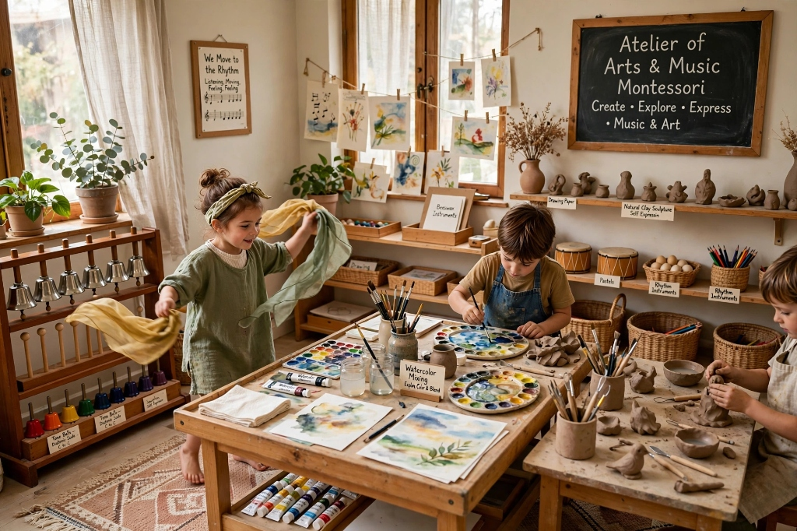
Montessori tone bells, rhythmic movement, watercolor mixing, natural clay sculpture, and self-expression.
Our mixed-age pods align directly with Dr. Montessori's planes of development, fostering natural peer leadership and intrinsic mastery.
Gentle separation, self-regulated toileting, expressive language expansion, and fine motor grip development in an unhurried, warm setting.
3-hour uninterrupted daily work cycles with golden beads, sensorial apparatus, movable alphabet, botany cabinets, and peaceful social collaboration.
Cosmic Education answering the big questions: origins of the universe, evolution of life, history of language, advanced mathematics, and research.
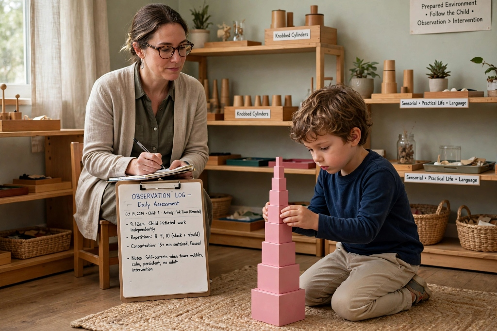
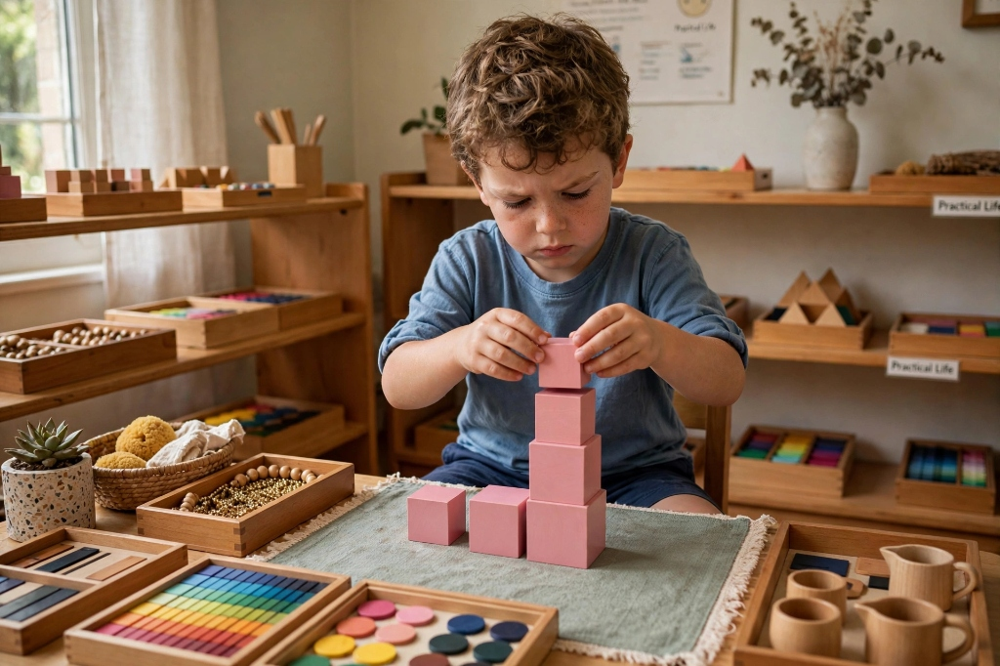
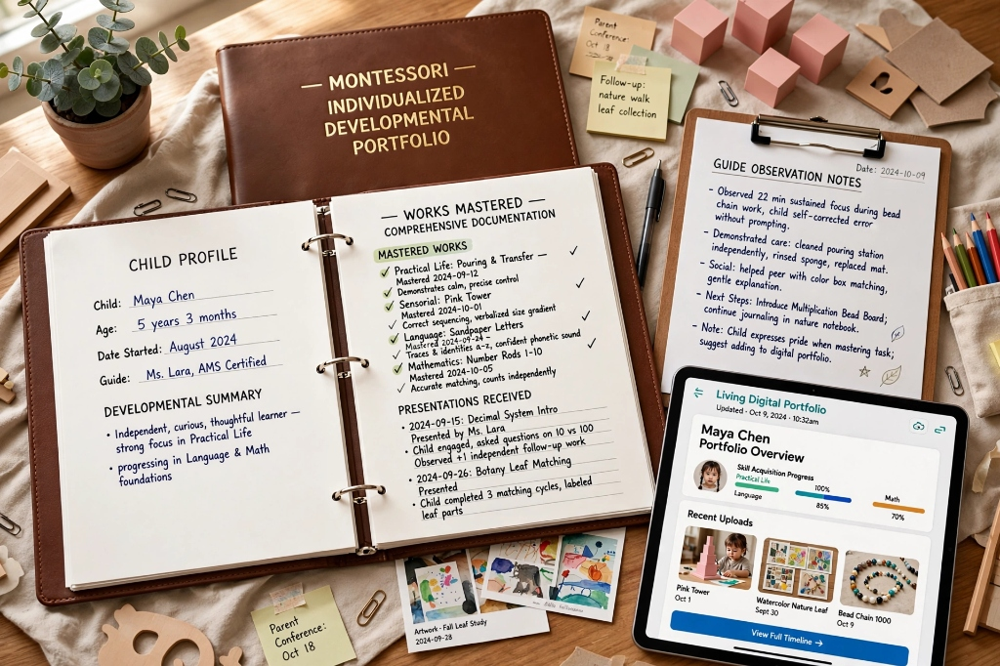
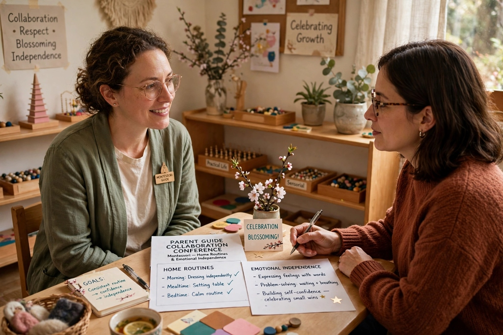
In place of stressful letter grades and standardized tests, KinderNest guides practice scientific observation. We track each child's repetitions, concentration spells, and mastery breakthroughs in a living digital portfolio accessible to parents.
Comprehensive documentation of presentations received, works mastered, and emerging sensitive periods updated weekly.
Quarterly one-on-one conferences to align on home routines, emotional independence, and celebration of the child's blossoming.
Compare our three primary multi-age learning environments tailored to sensitive periods.
| Feature | Toddler Community | Children's House | Lower Elementary |
|---|---|---|---|
| Target Ages | 18 Months – 3 Years | 3 – 6 Years | 6 – 9 Years (Grades 1–3) |
| Guide-to-Child Ratio | 1 : 4 Ratio | 1 : 5 Ratio | 1 : 6 Ratio |
| Core Pedagogy Focus | Toilet learning, gross motor balance, self-dressing & vocabulary explosion | 3-hour work cycle, golden bead math, tactile movable alphabet & sensorial geometry | Cosmic education, botanical botany, research projects, grammar symbols & advanced fractions |
| Outdoor & Nature Time | 90 minutes daily sensory garden play | 2 hours daily outdoor botany & micro-farm work | 2.5 hours daily field science & living soil lab |
| Lead Certification | AMI/AMS Assistants to Infancy (0–3) | AMI/AMS Primary Diploma (3–6) | AMI/AMS Elementary I Diploma (6–9) |
| Monthly Tuition | $320 / mo | $380 / mo | $420 / mo |
Temporary biological windows during which a child acquires particular capabilities with effortless joy and intense enthusiasm.
Toddlers crave predictable routines and consistent placement of objects. A prepared environment with fixed shelf locations provides the psychological security required for bold exploration.
From first babbling to multi-sentence phonetic stories. Sandpaper letters and 3-part cards leverage this period so children learn to write and read effortlessly through tactile phonetics.
Young children become fixated on tiny details: ants crawling on a stone, crumbs on a rug, beads in a tray. Our practical life exercises refine this intense pincer focus into fine-motor dexterity.
Isolating sensory dimensions: weight (baric tablets), pitch (tone bells), texture (touch boards), and color gradients (color tablets). Shapes the analytical foundation of the brain.
Children have a natural drive to learn how to open doors for others, apologize sincerely, wait their turn without interruption, and serve food with polite table etiquette.
The elementary child develops a passionate obsession with fairness, human ethics, animal rights, and cosmic origins: "Where did stars come from? Why must rules be fair?"
Developed by Édouard Séguin and perfected by Maria Montessori, this elegant 3-step method introduces every new concept without stress or anxiety.
The guide points to an object or tactile symbol and clearly pronounces its name: "This is a sphere. This is a cube." The child forms a direct neurological connection between the sensory perception and the word.
The longest and most playful period. The guide asks: "Can you show me the sphere? Place the cube on your rug." This tests passive vocabulary and muscular memory without putting the child on the spot.
Only when the guide is completely confident of mastery do they point and ask: "What is this?" The child joyfully responds: "Sphere!" If hesitant, the guide returns gently to Period 2 without correcting.
In traditional classrooms, outdoor time is confined to a brief recess on asphalt. At KinderNest, our outdoor botanical ateliers and permaculture gardens are direct extensions of the indoor prepared environment.
A child studying leaf shapes inside can immediately carry a wooden classification tray outdoors to collect real willow, maple, and oak leaves. Another child counting with bead chains calculates the spacing required for planting heirloom carrot seeds in our living soil beds.
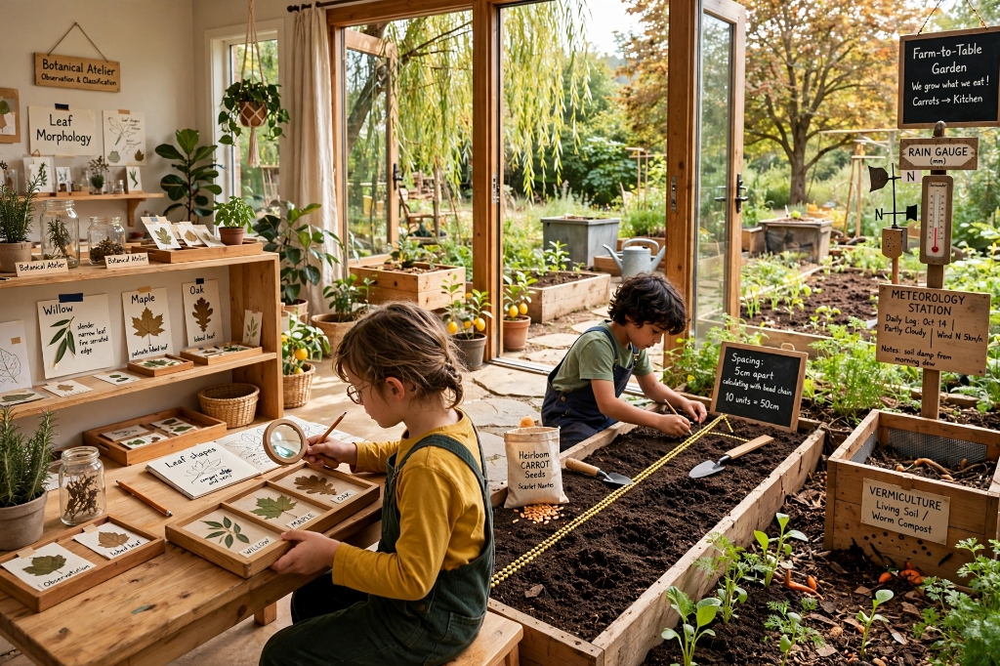
Because our classrooms protect the child's unbroken concentration, we built a custom Parent Dashboard to keep families deeply informed.
High-resolution candid snapshots of your child absorbed in work—pouring water, building decimal quantities, or sketching botanical specimens—delivered directly to your mobile app.
Visual milestone tracking across all five curriculum areas: Practical Life, Sensorial, Math, Language, and Cultural Studies, updated weekly by your lead guide.
Instant invoice access, automatic tax deduction statements (Dependent Care FSA eligible), and one-click enrollment add-ons for extended day and music ateliers.
Clarifications on schedules, toilet readiness, academic progression, and pod placement.
Applications are accepted year-round on a rolling basis. Secure your spot in our small 1:5 ratio pods or schedule a campus observation visit today.